A UI/UX Case Study on CVS Self-Checkout Machines
Self-checkout machines are becoming more and more common in chain supermarkets and convenience stores in recent years. They aim to provide a
more efficient method for people to do checkout with minimal help from staff. To better understand their role in people's everyday life,
I decide to focus on the self-checkout machines in CVS stores, find certain patterns by observing and interviewing three persons who use the machines.
Through this study, I can get a better understanding of their advantages as well as limitations, in terms of user interface design and user experience.
Sketch and Introduction of Interface
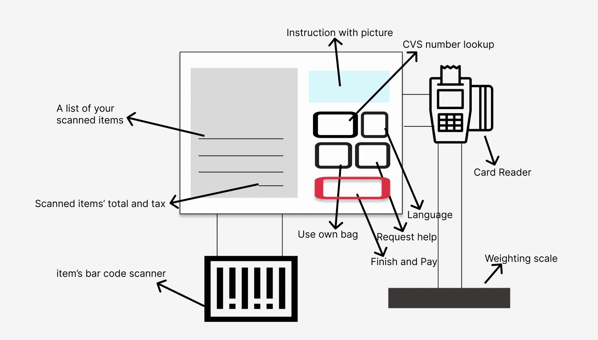
Its interface is mainly a touch screen, combined with a scanner for bar codes on items, and a scale to check if all picked items are scanned. The
layout and buttons of the touch screen may change during different stages of checkout process.
Questions and Observations
- What’s your frequency of self-checkout when shopping at CVS?
- What aspects and experiences do you like when using the self-checkout machine?
- What confusions or challenges did you face when using the self-checkout machine?
- What help did you require from staff or others, or what help did you offer friends/companies when using self-checkout?
- In your opinion, what percentage of checkout tasks should this machine undertake in CVS?
- The users I observe are generally comfortable when using self-checkout machine at CVS, and they averagely chose to use the machine over 80% of their shopping experiences at CVS. The times they didn’t use the self-checkout were mostly due to much shorter lines at the cashiers.
- They generally enjoy the sense of control and ease when using the self-checkout machine, and they think it saves their time because it performs as an increment to existing cashiers.
- They generally feel the machine is not difficult to get the hang of, especially for young people. A relatively new user I observed proved to use the machine without help from others, though he made a few more pauses to read the screen when operating compared with others.
- The use of promotions and coupons are what confuse people, as there were no instruction that you should scan your CVS card first for the promotion. And two of my interviewees are not so satisfied with having to ask for staff’s assistance sometimes when encountering a scanning mistake or what seems like only a small problem.
- People I interviewed hold different opinions on the percentage self-checkout machines should take. One think they should gradually replace nearly all cashiers, only leaving a few for elders or other people who had trouble using them. The other two think the current combination of cashiers and machines are okay, and enough cashiers should always be kept.
Personas
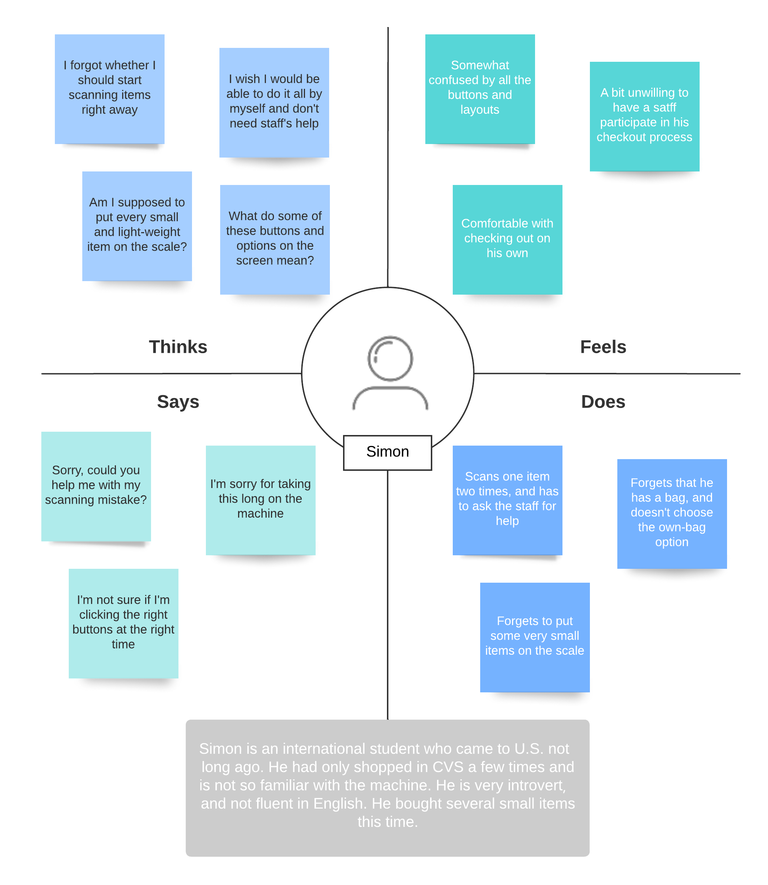
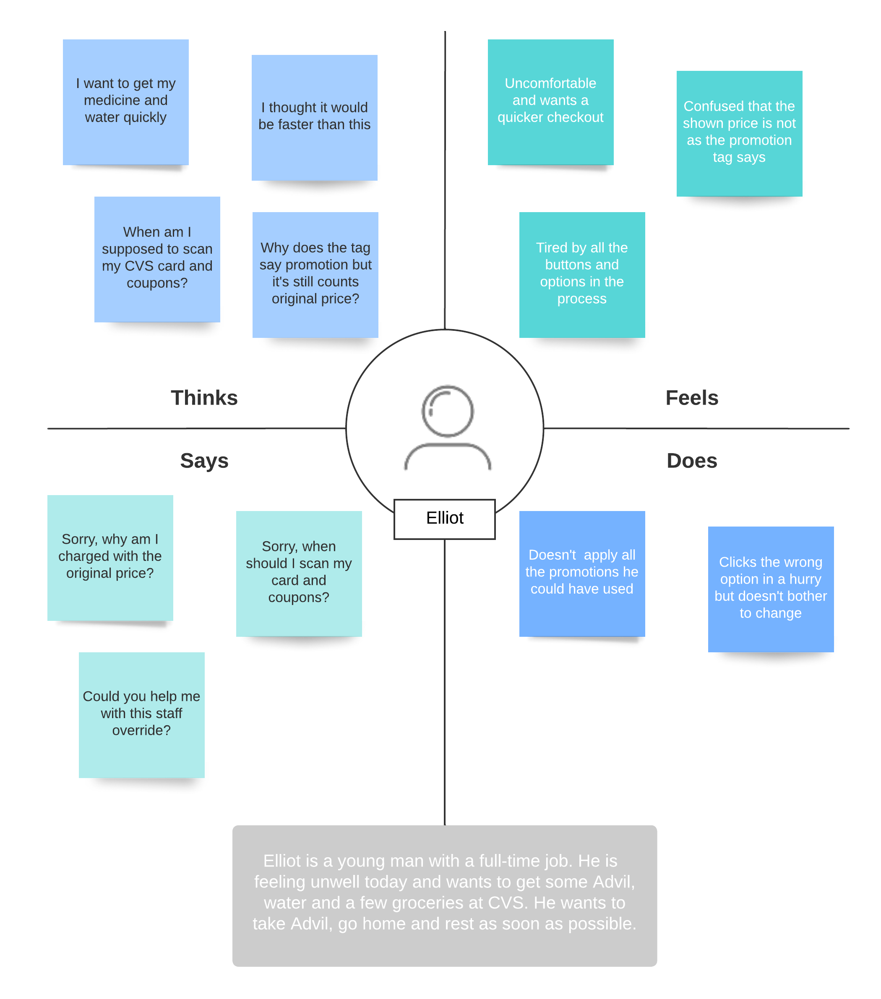
Story Board (Elliot)
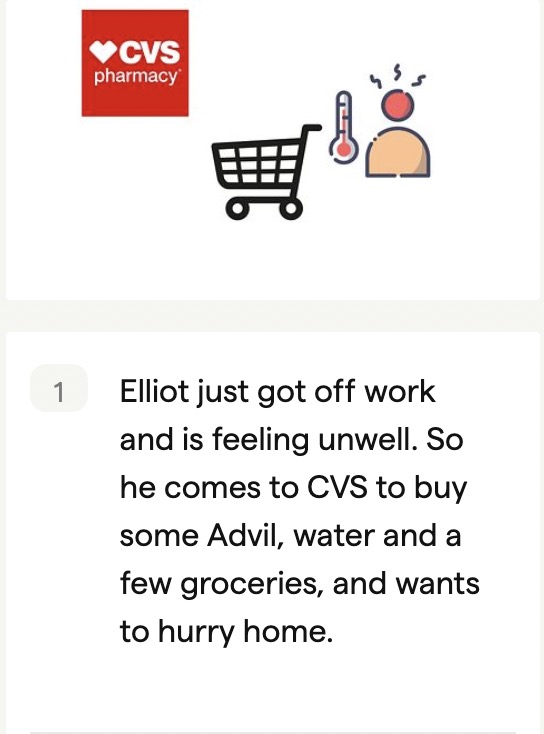
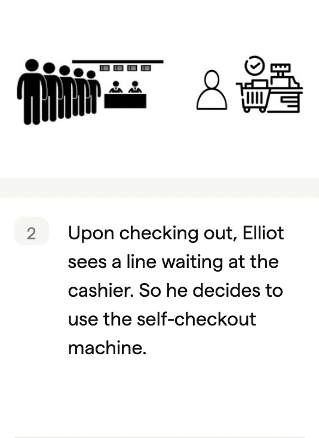
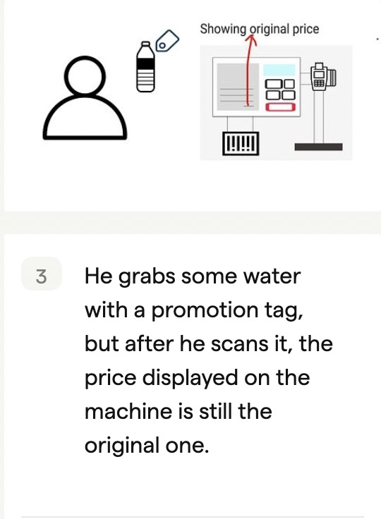
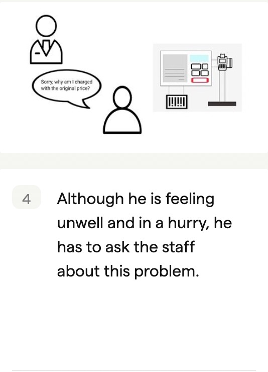
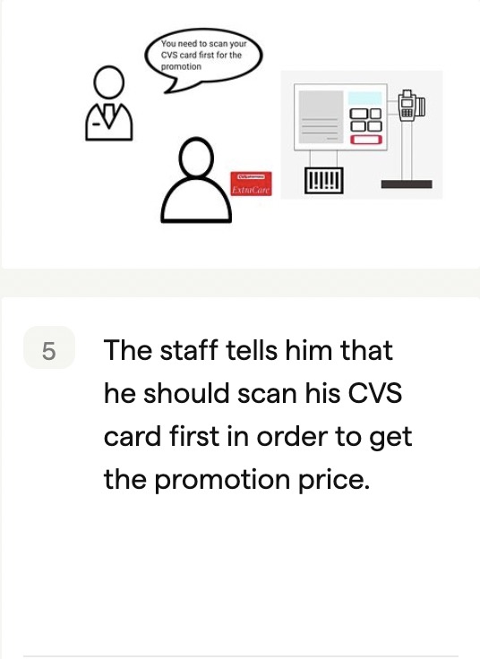
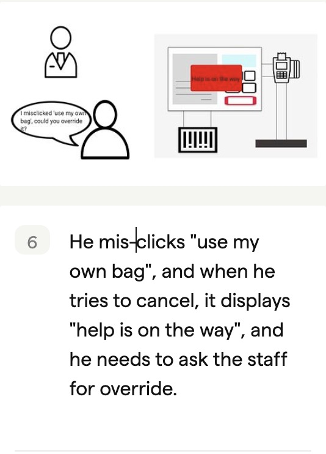
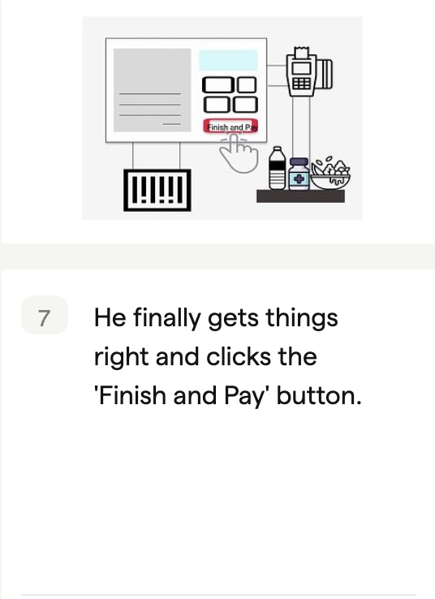
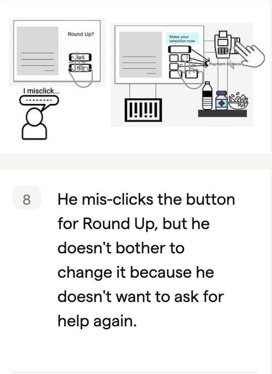
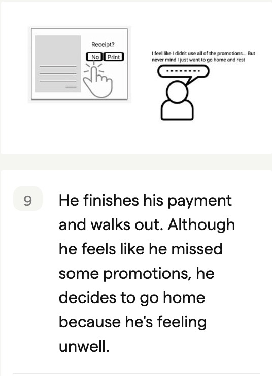